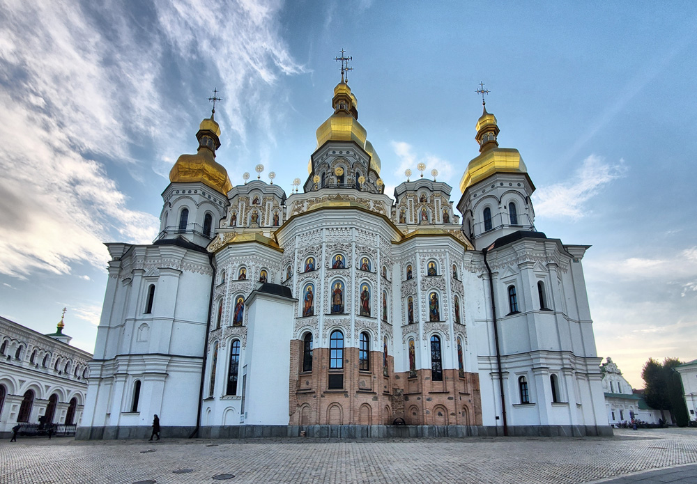
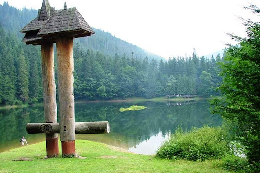
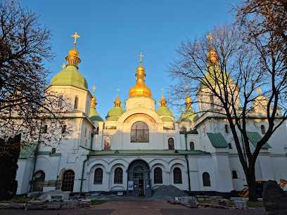
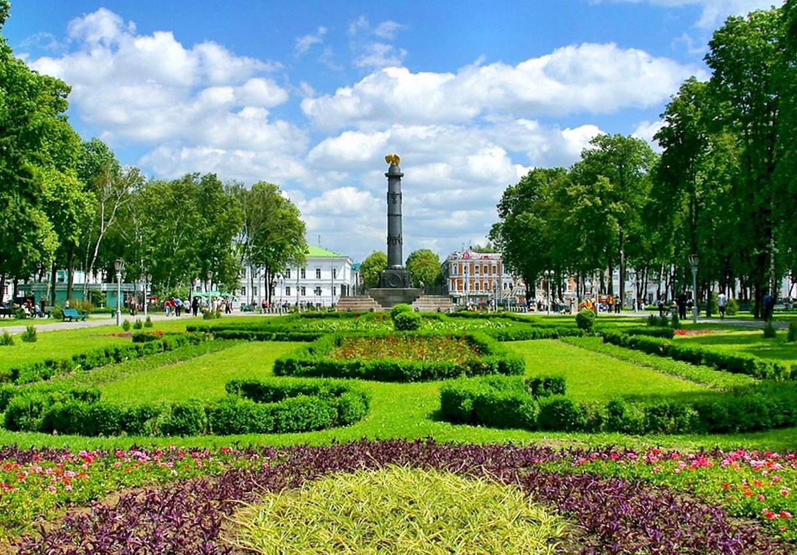

Києво-Печерська Лавра — одна з найважливіших православних святинь України, розташована у Києві.

Озеро Синевир — мальовниче озеро в Карпатах, що є одним із семи природних чудес України.

Софійський собор у Києві — пам'ятка архітектури та один із об’єктів світової спадщини ЮНЕСКО.

Хотинська фортеця — історична фортеця на Дністрі, відома своїм внеском в оборону України.

Кругла площа в Полтаві — символічне місце з унікальним архітектурним ансамблем, що є серцем міста.